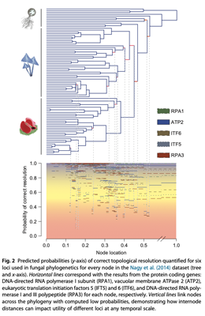

Overview
This part focuses on visualization.
We anticipate this to be an area of rapid growth so please check back often for new ways to visualize these metrics.
Also, if you develop a new way to view these data please let us know and we will gladly post the code and link(s) to your manuscript(s)
First steps
The quantitative framework of quartet internode calculations lends itself wonderfully to the development of new ways to visualize information in a given dataset.
This section highlights graphics from a few recent publications
Hwang et al. 2015 depicted QIRP across an entire tree by plotting the QIRP of a marker for each node simultaneously. This plot can be drawn by providing a tree, rate vector, and state space as in section 3. For this example, we will use a single tree from Near et al. 2014 along with site rates from the same studylibrary(ape)
trees<-read.tree(system.file("extdata","polypterus_trees.phy",package="PhyInformR"))
rate_vector<-as.matrix(rag1)
bichir_tree <-trees[[1]]
PlotTreeSI(bichir_tree,rate_vector,3) Here the branch lengths (x axis, time) and the blue lines (y axis, QIRP) match up.
We can see that a similar trend to the one at the end of the previous section:
Short internodes have lower QIRP and are more likely to be predicted to be either impacted by homoplasy or contain little information
Here is another example based on fungal data illustrating this general point that uses this approach

This approach to visualization can be quite handy when comparing markers, so leave this graphics window open for now QIRPAcrossTree.png
Visualizing Experimental Design
Say we are interested choosing a new marker to sequence for bichirs.
We can compare the predicted utility of rag1 to candidate markers using this plotting method. In this example we will compare rag1 with the first locus from Prum et al. 2015 We'll start by isolating the locus
candidate.locus<-as.matrix(prumetalrates[1:1594])Plot.Another.TreeSI(bichir_tree, candidate.locus,3,col="red",type=3)In the above plot, we have added QIRP to the previous plot on the Y axis with time still on the X axis. Blue lines correspond to the QIRP values of the tree internodes for rag1 while red lines correspond to our candidate locus. This visualization reveals that the candidate marker is predicted to be of higher utility for resolving every node in the bichir tree. This sort of visualization can be a great heuristic for choosing probe sets or primers for cost and time effective sequencing of markers
This form of visualization also displays overall trends of markers over time, and can help disentangle sources of error in tree inference. However, the above method requires a fixed internode length. Prum et al. 2015 provided an alternative visualization that accommodates for uncertainty in internode length
Note that here we are using the files from Prum et al. (2015), which are available on Zenodo (DOI 10.5281) though you could also substitute site rates from your own markers here
Heatmap
Download the above files and open prumetal_heatmap_rosetta.r that is hosted on the github repository with phyinformR
Navigate to the "Phylogenetic_Informativeness" part of the downloaded directory
Change the setwd() function at the top of the rosetta file to the directory path, save, then source
setwd("~/yourpath/Zenodo/Phylogenetic_Informativeness")
source(url("https://raw.githubusercontent.com/carolinafishes/PhyInformR/master/inst/extdata/prumetalrates.txt"))target_loci<-c("L216","L182","L149","L213","L184","L223","L305","L8","L203","L95","L41","L295","L107","L163","L21","L2","L325","L80","L28")
for (i in 1:length(target_loci)){
sizeInfo<-length(get(target_loci[i]))
assign(paste0("le",target_loci[i]), sizeInfo)
}
ll<-c(leL216,leL182,leL149,leL213,leL184,leL223,leL305,leL8,leL203,leL95,leL41,leL295,leL107,leL163,leL21,leL2,leL325,leL80,leL28)
names(ll)<-target_loci
rev(sort(ll))
#get the concatenated alignment
space.maker(allrates,.30,3)->a1
#add another 19 loci sorted by size
for (i in 1:length(target_loci)){
tempspace<-space.maker(get(target_loci[i]),.3,3)
j<-i+1
assign(paste0("a",j), tempspace)
}
demo<-rbind(a1,a2,a3,a4,a5,a6,a7,a8,a9,a10,a11,a12,a13,a14,a15,a16,a17,a18,a19,a20)
demo2<-as.matrix(demo)
row.names(demo2)<-c("allrates","L213","leL182","leL203","leL149","leL2","leL295","leL325","leL107","leL41","leL216","leL28", "leL184","leL8","leL95","leL80","leL163","leL21","leL305","leL223")
byThis <-.30/20
lilts<-seq(byThis,0.30-0.0001,by=byThis)
colnames(demo2)<-lilts
heatmap.2(demo2, Colv=F,Rowv=F, scale='none') This heatmap shows us the probability of correct resolution for increasingly small internodes. This map can be generated for other loci and the internode distances can be zoomed in on using the space.maker.narrow function.
References
Dornburg, A., M. Friedman, and T. J. Near. 2015. Phylogenetic analysis of molecular and morphological data highlights uncertainty in the relationships of fossil and living species of Elopomorpha (Actinopterygii: Teleostei). Molecular Phylogenetics and Evolution 89:205-218.
Dornburg, A., A. J. Moore, J. M. Beaulieu, R. I. Eytan, and T. J. Near. 2014. The impact of shifts in marine biodiversity hotspots on patterns of range evolution: evidence from the Holocentridae (squirrelfishes and soldierfishes). Evolution 69:146-161.
Graybeal, A. “The Phylogenetic Utility of Cytochrome B: Lessons from Bufonid Frogs” Molecular phylogenetics and evolution 1993;: 256–269.
Harmon LJ, Weir JT, Brock CD, Glor RE, Challenger W. GEIGER: investigating evolutionary radiations. Bioinformatics. 2008;24:129–31.
Hwang, J., Q. Zhao, Z. L. Yang, Z. Wang, and J. P. Townsend. 2015. Solving the ecological puzzle of mycorrhizal associations using data from annotated collections and environmental samples–an example of saddle fungi. Environmental microbiology reports 7:658-667.
Lanfear, R., B. Calcott, S. Y. W. Ho, and S. Guindon. 2012. PartitionFinder: combined selection of partitioning schemes and substitution models for phylogenetic analyses. Molecular Biology and Evolution 29:1695-1701.
Lanfear, R., B. Calcott, D. Kainer, C. Mayer, and A. Stamatakis. 2014. Selecting optimal partitioning schemes for phylogenomic datasets. BMC Evolutionary Biology 14:82.
McCallum E, Weston S. Parallel R. “O’Reilly Media, Inc.”; 2011.
Near, T. J., A. Dornburg, M. Tokita, D. Suzuki, M. C. Brandley, and M. Friedman. 2014. Boom and bust: ancient and recent diversification in bichirs (Polypteridae: Actinopterygii), a relictual lineage of ray-finned fishes. Evolution 68:1014-1026.
Neuwirth,E.RColorBrewer: ColorBrewer Palettes. 2014. R package version 1.1-2. https://CRAN.R-project.org/package=RColorBrewer
Paradis E, Claude J, Strimmer K. APE: Analyses of Phylogenetics and Evolution in R language. Bioinformatics. 2004;20:289–90.
Posada, D., and K. A. Crandall. 1998. Modeltest: testing the model of DNA substitution. Bioinformatics 14:817-818.
Prum, R. O., J. S. Berv, A. Dornburg, D. J. Field, J. P. Townsend, E. Moriarty Lemmon, and A. R. Lemmon. Accepted. A Comprehensive Phylogeny of Birds (Aves) using Targeted Next Generation DNA Sequencing. Nature.
Revell LJ. phytools: an R package for phylogenetic comparative biology (and other things). Methods Ecol. Evol. 2011;3:217–23
Su, Z., Z. Wang, F. Lopez-Giraldez, and J. P. Townsend. 2014. The impact of incorporating molecular evolutionary model into predictions of phylogenetic signal and noise. Phylogenetics, Phylogenomics, and Systematics 2:11.
Su Z, Townsend JP. Utility of characters evolving at diverse rates of evolution to resolve quartet trees with unequal branch lengths: analytical predictions of long-branch effects. BMC Evol. Biol. 2015;15:86.
Townsend, J. P. 2007. Profiling phylogenetic informativeness. Systematic Biology 56:222-231.
Townsend, J. P., Z. Su, and Y. I. Tekle. 2012. Phylogenetic signal and noise: predicting the power of a data set to resolve phylogeny. Systematic Biology 61:835-849.
Warnes,G.R., Bolker, B., Bonebakker, L., Gentleman, R., Liaw, W.H.A., Lumley, T., Maechler, M., Magnusson, A., Moeller, S., Schwartz, B., Venables B., gplots: Various R Programming Tools for Plotting Data. 2016. R package version 3.0.1. https://CRAN.R-project.org/package=gplots.
Wickham H. ggplot2: Elegant Graphics for Data Analysis. Springer; 2016.
Yang, Z. Fair-balance paradox, star-tree paradox, and Bayesian phylogenetics. Molecular biology and evolution 2007; 24(8), pp.1639-1655.
Dornburg, A., A. J. Moore, J. M. Beaulieu, R. I. Eytan, and T. J. Near. 2014. The impact of shifts in marine biodiversity hotspots on patterns of range evolution: evidence from the Holocentridae (squirrelfishes and soldierfishes). Evolution 69:146-161.
Graybeal, A. “The Phylogenetic Utility of Cytochrome B: Lessons from Bufonid Frogs” Molecular phylogenetics and evolution 1993;: 256–269.
Harmon LJ, Weir JT, Brock CD, Glor RE, Challenger W. GEIGER: investigating evolutionary radiations. Bioinformatics. 2008;24:129–31.
Hwang, J., Q. Zhao, Z. L. Yang, Z. Wang, and J. P. Townsend. 2015. Solving the ecological puzzle of mycorrhizal associations using data from annotated collections and environmental samples–an example of saddle fungi. Environmental microbiology reports 7:658-667.
Lanfear, R., B. Calcott, S. Y. W. Ho, and S. Guindon. 2012. PartitionFinder: combined selection of partitioning schemes and substitution models for phylogenetic analyses. Molecular Biology and Evolution 29:1695-1701.
Lanfear, R., B. Calcott, D. Kainer, C. Mayer, and A. Stamatakis. 2014. Selecting optimal partitioning schemes for phylogenomic datasets. BMC Evolutionary Biology 14:82.
McCallum E, Weston S. Parallel R. “O’Reilly Media, Inc.”; 2011.
Near, T. J., A. Dornburg, M. Tokita, D. Suzuki, M. C. Brandley, and M. Friedman. 2014. Boom and bust: ancient and recent diversification in bichirs (Polypteridae: Actinopterygii), a relictual lineage of ray-finned fishes. Evolution 68:1014-1026.
Neuwirth,E.RColorBrewer: ColorBrewer Palettes. 2014. R package version 1.1-2. https://CRAN.R-project.org/package=RColorBrewer
Paradis E, Claude J, Strimmer K. APE: Analyses of Phylogenetics and Evolution in R language. Bioinformatics. 2004;20:289–90.
Posada, D., and K. A. Crandall. 1998. Modeltest: testing the model of DNA substitution. Bioinformatics 14:817-818.
Prum, R. O., J. S. Berv, A. Dornburg, D. J. Field, J. P. Townsend, E. Moriarty Lemmon, and A. R. Lemmon. Accepted. A Comprehensive Phylogeny of Birds (Aves) using Targeted Next Generation DNA Sequencing. Nature.
Revell LJ. phytools: an R package for phylogenetic comparative biology (and other things). Methods Ecol. Evol. 2011;3:217–23
Su, Z., Z. Wang, F. Lopez-Giraldez, and J. P. Townsend. 2014. The impact of incorporating molecular evolutionary model into predictions of phylogenetic signal and noise. Phylogenetics, Phylogenomics, and Systematics 2:11.
Su Z, Townsend JP. Utility of characters evolving at diverse rates of evolution to resolve quartet trees with unequal branch lengths: analytical predictions of long-branch effects. BMC Evol. Biol. 2015;15:86.
Townsend, J. P. 2007. Profiling phylogenetic informativeness. Systematic Biology 56:222-231.
Townsend, J. P., Z. Su, and Y. I. Tekle. 2012. Phylogenetic signal and noise: predicting the power of a data set to resolve phylogeny. Systematic Biology 61:835-849.
Warnes,G.R., Bolker, B., Bonebakker, L., Gentleman, R., Liaw, W.H.A., Lumley, T., Maechler, M., Magnusson, A., Moeller, S., Schwartz, B., Venables B., gplots: Various R Programming Tools for Plotting Data. 2016. R package version 3.0.1. https://CRAN.R-project.org/package=gplots.
Wickham H. ggplot2: Elegant Graphics for Data Analysis. Springer; 2016.
Yang, Z. Fair-balance paradox, star-tree paradox, and Bayesian phylogenetics. Molecular biology and evolution 2007; 24(8), pp.1639-1655.